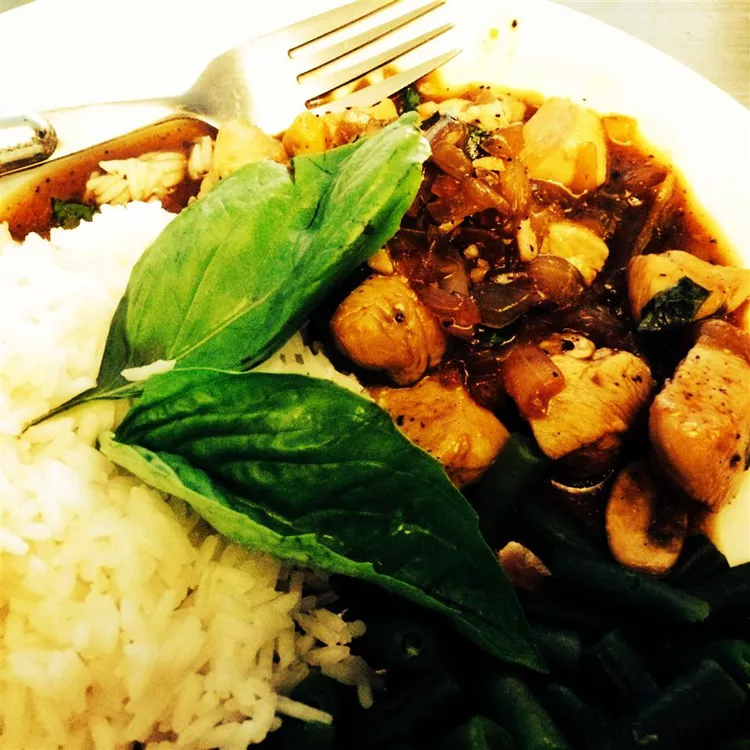

Spicy Basil Chicken

Ready in 30 minutes. Here's a Thai-inspired meal that's great for weeknights. Pieces of skinless, boneless chicken breast are sautéed with garlic and chile pepper flakes and cooked briefly with mushrooms, onions, and a little oyster sauce
An authentic taste of Thailand. Served best over white rice.
Ingredients
- 2 tablespoons chili oil
- 1 pound boneless, skinless chicken breasts, cut into bite size pieces
- 2 cloves of garlic
- 3 hot chile peppers
- 1 ½ teaspoons white sugar
- 1 teaspoon garlic salt
- 1 teaspoon black pepper
- 5 tablespoons oyster sauce
- 1 cup fresh mushrooms
- 1 cup chopped onions
- 1 bunch fresh basil leaves
Steps
- Heat the oil in a skillet over medium-high heat, and cook the garlic and chile peppers until golden brown. Mix in chicken and sugar, and season with garlic salt and pepper. Cook until chicken is no longer pink, but not done.
- Stir oyster sauce into the skillet. Mix in mushrooms and onions, and continue cooking until onions are tender and chicken juices run clear. Remove from heat, and mix in basil. Let sit 2 minutes before serving.
Back to Home